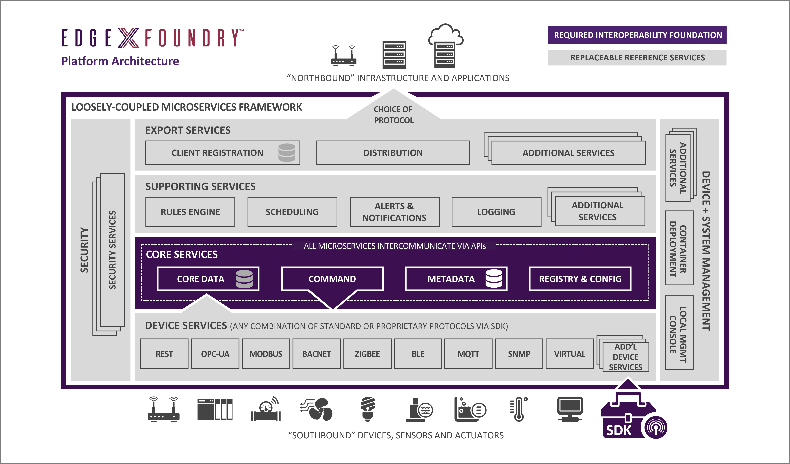

Lab 1 - 概要¶
読み物パートです。
EdgeX Foundry とは¶
公式サイト によれば、
The World’s First Plug and Play Ecosystem-Enabled Open Platform for the IoT Edge.
A highly flexible and scalable open software framework that facilitates interoperability between devices and applications at the IoT Edge, along with a consistent foundation for security and manageability regardless of use case.
とされています。
ひとまずは、
- オープンソースで
- IoT のエッジコンピューティングを実現する
- フレームワークである
と思って向き合えば、大外れではないでしょう。
EdgeX Foundry は Linux Foundation が立ち上げた LF Edge のプロジェクトのひとつで、LF Edge には 現時点で 80 社以上がメンバとして掲載されています。
EdgeX Foundry のアーキテクチャ¶
アーキテクチャの概要は 公式のドキュメント からも読み解けます。
見ていくと、EdgeX Foundry が多数のマイクロサービスの集合体として実装されていることがわかります。 以下、アーキテクチャの画像を引用します。

データフローにかかわる部分では、図の中央部分の通り、全体で大きく 4 つの層で構成されています。レイヤごとに役割をざっくり押さえておくとよいでしょう。
実デバイスに近い側（サウスサイド）から、大まかには、
- デバイスサービス層
- 実デバイスからデータを受け取って、コアサービス層に送る
- コアサービス層から命令を受け取って、実デバイスを操作する
- コアサービス層
- デバイスサービス層からのデータを蓄積する
- サポートサービス層（のルールエンジンなど）から命令を受け取って、デバイスサービス層にコマンドを発行する
- エクスポートサービス層にデータを送る
- EdgeX Foundry 内のサービス群やオブジェクトのメタデータを管理する
- サポートサービス層
- いわゆる分析機能（今のところは簡単なルールエンジン）を提供する
- アラートやロギングの機能を提供する
- エクスポート済みのデータの削除を行う
- エクスポートサービス層
- EdgeX Foundry の外にデータを送出する
な具合です。
実装は、Fuji リリースでは一部 Java も残っていますが、Go 言語と C 言語が主のようです。動作させるためのハードウェア要件は厳しくなく、Raspberry Pi 4 のような小さなハードウェアでも動作します。
ソースコードからビルドして動作させるほか、Docker Compose でコンテナとして動作させたり、Ubuntu では Snap による導入も可能です。
また、オープンソースであり、開発は GitHub 上で盛んに行われているため、興味があればコントリビューションも可能です。デバイスサービス層やエクスポートサービス層の実装のためには SDK も提供されており、開発に参加もできます。
参考リンク¶
- GitHub (
edgexfoundry)- メインのプロジェクト群です
- GitHub (
edgexfoundry-holding)- GA されていない開発中のプロジェクト群です
- この配下のプロジェクトは、公式にはサポートが提供されません
- デバイスサービス用の SDK
- アプリケーションサービス用の SDK